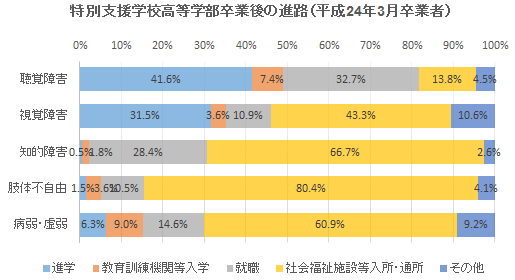

扶養認定範囲等の拡大に向けて
はじめに
ＪＲ東日本社員の福利厚生に関する内容をより充実させるために、私たちは「扶養認定範囲の拡大」と「家族証の交付範囲の拡大」「カフェテリアプランの利用範囲拡大」を求め取り組みます。
現在、社員の扶養している子弟が高等学校卒業年齢になると、担当者から進路状況の確認が行われます。その結果を受け、税的控除及び健保組合被保険者として認定されます。条件を満たしていない場合、扶養手当などは支払われません。そして家族証を返却することになり、カフェテリアプランの対象外となります。
しかし、病気や心身に障がいを持つ子弟を持つ社員にとって、扶養認定を切られた子弟を養育することは、並大抵のことではありません。金銭面を含め、家族をはじめとした関係者の努力だけではどうしようもない現実に直面します。国をはじめとした関係各機関や企業の適切な指導や協力が不可欠だと考えます。
JR東日本にも、障がいを持つ子弟を扶養する社員を支援する制度があります。この制度を現状にマッチした、使いやすい内容にして運営することが出来れば、障がいを持つ子弟を扶養する社員への一助になると考えます。
プライベートな問題でかつ極めてデリケートな課題ですが、“仲間”たちのためにご協力よろしくお願いします。
第1回「取り組みのスタート」
「お子さんは４月から進学ですか、就職ですか？」と職場の担当者から聞かれ「なんで？」と思いました。
ウチの子は、高等学校を卒業したら近所の“作業所”に行くから進学なのかな？就職なのかな？でも何の確認されるんだろう？と考えているうちに「家族証を返却してください。」と担当者の言葉は続きました。「ん～？」家族証を返却したら社割使えないじゃん、カフェテリアプランも使えないの？
この「ん～？」が私たちの取り組みのスタートとなりました。
現状把握
関係者に話を聞いたり、就業規則の読み合わせなどを行い、扶養、家族証、カフェテリアプランの各制度について調べてみました。
- 扶養している子弟が１８才を迎えると、各職場で担当者から就職・進学などの進路確認がなされる。
- 1.の結果により扶養の打ち切り、または継続が決定される。
- 社員家族証は、交付できる範囲「子」の項で「賃金規定に規定する扶養手当の支給対象となる者」としている。
- カフェテリアプランは、子は「扶養認定」を使用条件としている。
現行の制度では「扶養認定」を切られてしまうと、自動的に「家族証」も「カフェテリアプラン」も権利がなくなってしまいます。
経営陣の判断で改善できることがあるはず
現状では「子」については「扶養認定」が切られると「家族証」「カフェテリアプラン」とも権利がなくなります。
しかし、「両親(義父母)」に対しては「扶養認定」にかかわらず、「家族証」が発行され、カフェテリアプランも利用できます。
つまり、「扶養認定」と「家族証」「カフェテリアプラン」の関係は認められないということになります。
したがって経営陣の判断で、ハンディを持った子弟を持つ社員・家族へのバックアップの視点で福利厚生の見直し、または特例の導入などを行えば、「家族証の発行」「カフェテリアプランの使用」も可能であると私たちは考えます。
第2回「障がい者の扶養認定をめぐる状況」
関係者、関係規則を調べた結果「扶養認定」が切られると、「家族証」「カフェテリアプラン」の権利もなくなることが分かりました。
そこで、「扶養認定」にかかわらず、特例として障がいを持つ子弟については、家族証の支給、カフェテリアプランの利用をできるようにすべきと考えました。
障がい者の扶養認定を認めるべき
しかし、根本的には障がいを持つ子弟に対しては「扶養認定」そのものを認めるべきと考えます。
そのために、障がい者の扶養認定をめぐる状況について、分かったことをまとめてみます。
- 賃金規定には扶養親族の範囲として、「重度心身障害者」の項が設けてある。また「重度心身障害者」と認定された場合は「年齢制限はない」としている。
- 「重度心身障害者」とは、心神喪失の常況にある者、または、身体の重大な障害若しくは不治の疾患により常時看護を要し、かつ、終身労務に服することができないもの、となっている。
- 「認定」については、箇所長は申請書等を受理した場合は、これを審査し、認定を行うとしているが、「障害者の申請等」の項が見当たらない。
現場担当者は、申請時に「身体障害者手帳又は、愛の手帳」の提出が必要としている。 - 就業規則や賃金規定は「身体障害者福祉法(昭和24年法律283号)」に基づいて定められている。
- 社員家族証は、交付できる範囲「子」の項で、「賃金規定に規定する扶養手当の支給対象となる者」としている。
- カフェテリアプランは、子について「扶養認定」を使用条件としている。
障がい者をめぐる環境は
また、障がい者をめぐる環境について以下のことが分かりました。
- 「作業所への通所」は、就労支援と自立支援を目的として行われている。進学とも就職とも異なる。
- 障害者年金は、20歳から支給される。
- 障害の区分判定に基づき、障害基準が定められる。
- 特別支援学校高等部（本科）の卒業生の進路は、以下の通りです。

視覚障害、聴覚障害では、比較的に進学の比率が高いのですが、知的障害、肢体不自由、病弱・身体虚弱では圧倒的に社会福祉施設等入所・通所が高くなっています。
多様化している現状に合わせ、制度を見直すべき
今日「社会的なハンディキャップ」は複雑化、多様化しており、重度、軽度に関わらず「特別支援学校卒業者」の半数以上は「進学」でもなく「就職」でもない「作業所」を選択せざるを得ないのが現実です。
それにもかかわらず、現在の会社の制度では「重度」と認定されない限り、扶養親族の対象から外され、扶養手当だけでなく、社員家族証の交付やカフェテリアプラン制度も適用除外とされてしまうのです。
第3回「改正草案」を作成
中央本部は悩んでいる組合員、社員そして家族の立場に立ち、制度改正に向けて以下のとおり草案を作成しました。
改正草案
Ⅰ.労働条件に関する協約の一部改正（案）
- 労働条件に関する協約第6章第286条第4項にある「重度心身障害者」の認定条件について、「心神喪失の常況にある者」を「原則として知的障がい者のうち、療育手帳を交付されている者」に改定すること。
- 同項「身体の重大な障害者若しくは不治の疾患により常時看護を要し、かつ、終身労務に服することができない者をいう」を「原則として身体障がい者手帳を交付された者」に改定すること。
- 同協約に記載されている「障害者」を「障がい者」と改定すること。
Ⅱ.社員家族証の交付範囲の改正（案）
- 「養育手帳、身体障がい者手帳を交付された者」を加えること。
Ⅲ.カフェテリア・プランの利用拡大（案）
- カフェテリア・プランの利用対象者の範囲を拡大すること。
「改正草案」の実現のために協力をお願いします
会社の制度を変えるこの取り組みは、その実現には多くの困難が予想されます。しかしながら、待ったなしの現実の中で悩んでいる組合員、社員がいることも現実です。
弱い者の立場に立って考えることが、労働組合として、人としての当然の道ではないでしょうか。
私たちは、安心して社会生活ができる支援制度の充実化とともに、真に人間を尊重し得る企業文化の構築を目指していきます。その実現に向け賛同いただける皆さんと心と力を合わせて取り組んでいきます。
多くの皆さんの協力とアドバイスをお願いします。
第4回「申し入れを提出」

中央本部は、5月31日に申第9号「扶養認定に関する制度等の改定申し入れ」を経営側に提出しました。
申し入れ項目
- 労働条件に関する協約および賃金規程の一部改定について
- 労働条件に関する協約 第6章 第286条 第4項および賃金規程 第4章 第39条 第4項にある「重度心身障害者」の認定条件について「心神喪失の常況にある者」を「原則として知的障がい者のうち、療育手帳を交付されている者」に改定すること。
- 同項「身体の重大な障害者若しくは不治の疾患により常時看護を要し、かつ、終身労務に服することができない者をいう」を「原則として身体障がい者手帳を交付された者」に改定すること。
- 同協約および規程に記載されている「障害者」を「障がい者」と改定すること。
- 社員家族証の交付範囲に「療育手帳、身体障がい者手帳を交付された者」を加えること。
- カフェテリア・プランの利用対象者の範囲を「療育手帳、身体障がい者手帳を交付された者」まで拡大すること。
- 上記に関する回答を2016年7月26日までに書面にて行なうこと。
改訂実現にむけて心と力を合わせよう！
JR東日本会社は発足より経営理念の一つに「社員・家族の幸福を実現する“人間尊重企業”」を掲げてきました。今日まで幾多の変革を経てきましたが「企業発展のすべての基礎は人である」ことは、言葉を変えてもその理念は現在まで継承されています。
しかし、社員とその家族に対する制度を紐解いてみると、社会的にハンディキャップを持つ子弟の「扶養認定」に対しては、これらの精神が追いついていない現実があります。真に人間尊重企業たるJR東日本の構築と、安心して仕事と生活ができる制度を実現するために、JRで働くすべての労働者の心と力をあわせて闘おう！
第5回「団体交渉を行う」
怒りのゼロ回答
2016年8月24日、申第9号「扶養認定に関する制度等の改定申し入れ」について、本部、本社間で団体交渉が行われました。しかし、経営側は「組合員の声は受け止める」としながらも、すべての項目において「現行で妥当」との認識を示し、議論は平行線をたどりました。
経営側は制度設定の具体的根拠を示せず（交渉要旨）
組合側回答書に「基準内賃金であることから慎重に検討」とある。人件費の増加が懸念か？
経営側基準内賃金は手当にも反映されることから、中長期的に経営に影響する。手当は「労働対価ではない」ことから、公平性、納得性を鑑みて判断した。
組合側ハンディキャップを持つ家族にお金がかかる点の考慮も必要ではないのか？扶養の精神を鑑みれば、申を受け止めるべき。
経営側会社は障がいに配慮していなくはない。平成10年に現行制度が施行された。重度、軽度の線引きは難しいが、公的な支援もあることから現行で妥当と考えている。
組合側ある職場ではハンディキャップ持つ家族を扶養する社員が5%もいる。当社全体ではどうか?
経営側数字は把握していない。
組合側認定条件は何なのか?
経営側ベースは本人申請となる。手帳を基本要件とした上で重度軽度を総合的に判断する。
組合側重度だから大変、軽度だから良いとはならない。よって現行の判断基準には公平性はない。線引きを変えられない理由は何なのか。なぜ現行で妥当なのかを答えるべき。
経営側規則に則って、誰もが疑わない範囲が線引きとなっている。
これからも改定のたたかいを推し進めていきます
団体交渉で経営側は「就業規則、賃金規定にこのように書かれている」と結論づけるのみで「なぜ改定しないのか」の具体的根拠を明らかにすることができませんでした。
私たちは引き続き要求実現をめざし、社会制度の仕組み及び当社の制度制定の根拠を明らかにすることを通して、粘り強く経営側に改定の必要性を訴えていきます。今後も皆さんの支援をお願いします。
※東日本ユニオン業務通信No.46（2016年8月30日）の内容を、一部変更の上転載しました。